（73）哭きの竜・外伝
近代麻雀７月15日号から、哭きの竜・外伝の連載が始まった。
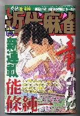
“じつは死んでいなかった”、というのは魁・男塾のパターンだが、まさか....はたして彼は誰なのか、まことに興味津々。
それはともかく、連載開始号でリュウがゲームしている雀荘が大阪の新世界。
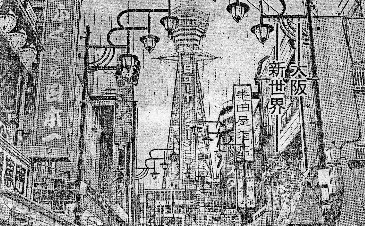
最初に出てくる新世界の風景。思わずブーマン由来記を思い出した。
このアングルは通天閣が正面に見えるので、いちばんポピュラーなアングル。σ(-_-)も新世界に行ったとき、同じアングルで写真を撮った。ほら、左側の「ふぐ日本一」とか、右側の「半田屋酒店」という看板まで同じ。
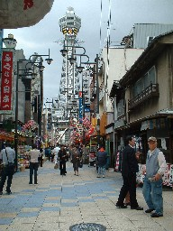
そいで取材旅行を思い出し、（懐かしいな）と思いながら読んでいたら、さらに“あらら”と思うコマ。
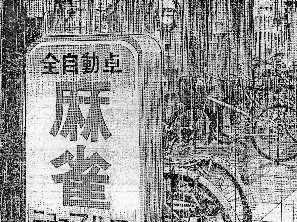
雨降りの日とかでマンガでは分かりにくいが、行ったことのあるσ(-_-)にはすぐ分かった。これはじゃんじゃん横町を抜けたところにあるニューマルコ。
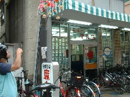
新世界には何軒かの雀荘がある。しかし人気マンガでここまで宣伝してくれるんだから、PR効果抜群。σ(-_-)は中に入ったことはないが、ちゃんと中の様子も描写してくれている。おかげで、もう一度、出かける手間がはぶけた。
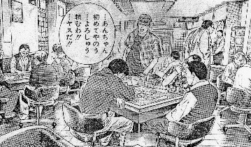
ここへヤクザの親分が乗り込んで、拳銃を振り回す。なんだかとっても物騒で、宣伝どころか逆効果にならないのかな？。
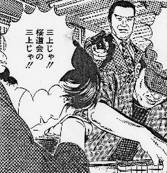
親分は、その店でリュウとゲームを始める。もちろんヤクザが乗り込んできて拳銃を振り回しても、お巡りさんは１人も来ん。新世界は不思議な街だ。
そして東の１局６巡目、リュウは生牌のを切った後、下家の
を大明槓。そしてまた
「
って東の１局なんだから、だから、隠しドラが恐ろしい。そんなところへ「狙いは何だ？」と聞かれても答えるヤツはいないと思うぞ....
そのあとリュウはをポンして
チー。どう考えても混一構え。


こここで親分は、門混一通のマチ。
親分、ここへ
を引く。
ツモ切りするか切るか。少し迷って

それは仕方ないけれど、
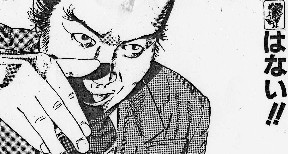
おまけにこの超危険牌
「三上はうれしかった・・・この男が竜であれ、竜の分身であれ、誰であれ、そんなことはどうでもよかった・・・」
なんだかもうヤケクソのような....（^-^；
前号のシーンについて、「ヤクザが込んできて拳銃を振り回しても、お巡りさんは１人も来ん。新世界は不思議な街だ」と書いたけれど、甘かったッ！。
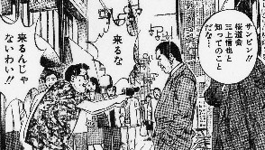
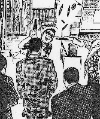 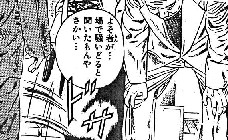
パンッ！ ドサッ って....お巡りさぁーん！